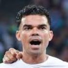

|  | Pepe |
| Gender | Male |
| Ethnic | Portuguese |
| Job | Portuguese Footballer |
| Desc | One of the great villains of the game but a nasty, hard centre-back that would be very high on any great striker’s list of defenders he least wanted to play against. While his grit and determination stand out, nobody lasts a decade at the Bernabeu without possessing exceptional quality, with three La Liga titles (which has eluded the club since his departure) and as many Champions Leagues, Zinedine Zidane would be wise to acquire a similar player now. |
Affiliation
| Org | Portugal National Team |
| Club as Player | Real Madrid |
2010 09 13 Retrieve
[Pepe on Mesut Ozil] Ozil has such quality that we just have to leave him room to showcase
2014 08 16 Retrieve
[Pepe, Real Madrid defender, about the capital club’s new assistant coach] I think Hierro is the best signing Madrid has done for the 2014/15 season. He knows a lot about the club and that is very important for the players. For me in particular, he is a player I always admired. He is a great person and I’m very happy
2016 06 11 Retrieve
[Real Madrid defender Pepe tried to explain his emotional response to his club’s UEFA Champions League success] That’s hard to explain. I started crying when Lucas Vazquez calmly scored his kick with extreme confidence. I got emotional and I felt we were not going to lose. It all started when Sergio [Ramos] told us we were going to use the goal in front of our fans for the shoot-out
2017 04 08 Retrieve
[Real Madrid have confirmed that defender Pepe, who scored in Saturday’s 1-1 draw with Atletico Madrid, has broken two of his ribs] After the examinations carried out today on Pepe at the Sanitas La Moraleja University Hospital, he has been diagnosed with fractures in seventh and eighth ribs on the left side.
2017 05 23 Retrieve
[Pepe is prepared to wait until the very last for Real Madrid to offer him an extension to his expiring contract] The final is on the 3rd, and I have a contract until June 30. As I have always said, I will wait on Madrid until the very last. I am happy and I am at 100 per cent to be able to play.
2017 06 07 Retrieve
[Fabio Capello has claimed that Pepe’s transfer from Real Madrid to Paris Saint-Germain has been completed and only needs to be announced] Pepe to PSG? It’s done 100%. They met at a hotel in Cardiff.
2017 06 22 Retrieve
[Pepe is currently away on international duty at the Confederations Cup] My future is the national team. I don’t have a contract at the moment, but I just want to make the most of the national team and the chance to succeed in the Confederations Cup.
2017 07 05 Retrieve
[Besiktas confirm signing of former Real Madrid defender Pepe] My goal is to continue to win trophies. I love my job. I love to give my all on the pitch.
2017 07 05b Retrieve
[Former Real Madrid defender has spoken of his love for the La Liga club following confirmation on his free transfer to Besiktas] I spent 10 wonderful years at Real Madrid. My two daughters were born in Madrid, I won three Champions Leagues and three La Liga titles as well. I love Real Madrid and their fans.
Something happened in a game against Getafe and I was punished for it. Since then, I have been judged and labelled as an aggressive player. I have always done everything to defend my goal
2017 07 05c Retrieve
[Pepe had agreed to join Paris Saint-Germain but signed for Besiktas] My goal is to continue to win trophies. I love my job. I love to give my all on the pitch.
2017 11 21 Retrieve
[Real Madrid hero Pepe now conquering the Champions League with Besiktas] I had many offers from many big, important European clubs. When Besiktas came to me with their offer and their project, it grabbed my attention. Many, many people sent me messages on social media. I couldn’t not go. I couldn’t turn my back on all this affection that the people had given me. I said I have to go to Besiktas. It’s impossible not to go to Besiktas!
2017 11 21b Retrieve
[Former Real Madrid centre-back Pepe says he wants Cristiano Ronaldo to join him in Turkey with Besiktas] If I could choose and it were possible, of course I would like Cristiano to come here. He’s a person for whom I have maximum respect. Off the pitch, Cristiano is an extremely normal person. When something gets out in the media talking about him… I look and I say: ‘This can’t be. It’s a lie’. People talk without knowing the real Cristiano. He’s a normal person with normal habits like us. He likes his relatives. He loves his sons. He stresses the importance of being a father which I think is important. He’s does this perfectly and naturally.
When Besiktas came to me with their offer and their project, it grabbed my attention. Many, many people sent me messages on social media. I couldn’t not go. I couldn’t turn my back on all this affection that the people had given me. I said I have to go to Besiktas. It’s impossible not to go to Besiktas!
I’ve never experienced an atmosphere like this before. The Turkish people live for football. It’s a passion for them and they show it to their teams with love
2019 04 08 Retrieve
[Pepe claims Real Madrid were a ‘graveyard for centre-backs’ prior to his arrival] Porto improve every single player because this is a very demanding club. Porto prepared me really well and this didn’t go unnoticed in Spain, as before I went to Real Madrid the club were known as a graveyard for centre-backs. They had amazing centre-backs that had failed there. I came from a league viewed by many as not as competitive as others, but I played for 10 years and won many trophies.
I’ll always say it was football that gave me everything in life - lots of friends, the chance to make my dreams come true. Returning to Porto was also my dream - to come back to the club where I was so happy. This is a team that taught me a lot and made me the player I am today. The first time [I joined] was difficult because I’d left a small island to come to the mainland. I had to adapt very quickly because this was just after Porto had won the Champions League. Yet I identified strongly with the club, the people at the club made me feel very comfortable and provided the best working conditions for me. Now I’m back here with Porto, with a lot of good central defenders. Defenders who, in my opinion, could very well be playing for a club like Real Madrid because they’ve a lot of quality. So much so that Militao was bought by Madrid, right?!
[I have already won the Champions League three times] and this season it’s going to be four, God willing! We know we have a very difficult task, against a strong team who play in the style of their coach. But we have to be ourselves, we have to be the same team we have been in this Champions League campaign, a cohesive team that fight for everything, looking for a positive result, looking to score goals - being ourselves. We have to respect Liverpool, who are a great team, but we are going to do our job